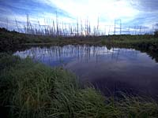
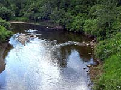
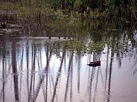
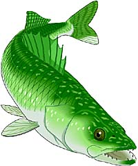

|
 Bony fishes are present in almost all bodies of water in the world. Over thousands of years, they have adapted to their environments. Some fish can survive at the very bottom of the ocean, where pressure is great, no sunlight reaches and food is scare. A few of these species are able to produce their own light. Others have adapted to very warm, sunny waters where oxygen is not as plentiful as in cooler lakes and streams. Fish are cold-blooded, their body temperature being the same as their particular surroundings. Each fish species has a certain temperature range of water that it can tolerate. For example, trout survive best in cool, clear waters yet perch can be found in warmer, turbid waters. |
The species found in Saskatchewan waters are adapted to our environment. Imagine if a tropical fish were introduced to a cold lake in our province's north...it would most likely freeze upon contact with the water!
|

Fish have adapted to their environment, but have they adapted to man's influence on their habitat? Fish are excellent indicators of the health of a waterbody. A change in numbers and types of fish in the water is usually a sign of habitat degredation or loss. On the prairies, fish habitat is found in lakes, reservoirs, rivers, streams, creeks, marshes, ponds, and swamps. Fish habitat can be any place that supplies the food, shelter, and water that fish need as well as a space for reproduction and growth over their life cycle. Water systems are vulnerable to land uses of all kinds, from forestry and agriculture to cottaging and hydroelectric power generation. It is through the concern and efforts of the people of Saskatchewan that the environment, and fish habitats stand a chance of survival.
Why is Habitat Important?Fish live where they can best satisfly their needs. If some of the requirements are not met, through damage or loss of habitat, their numbers drop. In time, their entire population may die out. No habitat means no fish. |
|

Muddy, weed-choked waters and silt covered spawning beds cannot support a wide variety of fish species. Such conditions favour species that tolerate degraded habitats, which excludes many sport fish. The water may bot be fit to drink and conditions can interfere with recreation. The space that fish occupy has a direct effect on our province's economy...if the waterbodies cannot support fish, the industries of tourism, sport fishery and commercial fishery would suffer. Angling alone accounts for almost $1 billion in spending every year in the prairie provinces. Fish habitat is just as important to aboriginal people who have fished for centuries as a way of life. For them, fishing is still a traditional pursuit that is a source of food and income.
What Makes a Good Fish Habitat?
|
|

Fish can survive in a variety of water environments. Small streams, wetlands and even the occasional hay meadow, can become temporary spawning and nursery habitat for spring spawners. Water levels may be high enough to create this type of habitat during snowfall or after heavy rainfall. Migration habitat allows fish to reach spawning and feeding sites. Water depth and flow, and an absence of obstructions such as dams, culverts, and debris, ensure that fish are free to swim up and down rivers and streams on their way to other life cycle habitats. Since larval and juevenile fish have different needs for food and protection than adult fish, suitable habitat often determines the success of the next generation of fish. Nursery and rearing habitats that may have been perfect in the spring, may become dry by late summer or autumn. Feeding habitats are usually found in less than 10 metres of water. This is where most fish and a variety of aquatic organisms, many fish food, live.
A good fish habitat exhibits the following characteristics:
|
| Walleye require a habitat having:
|